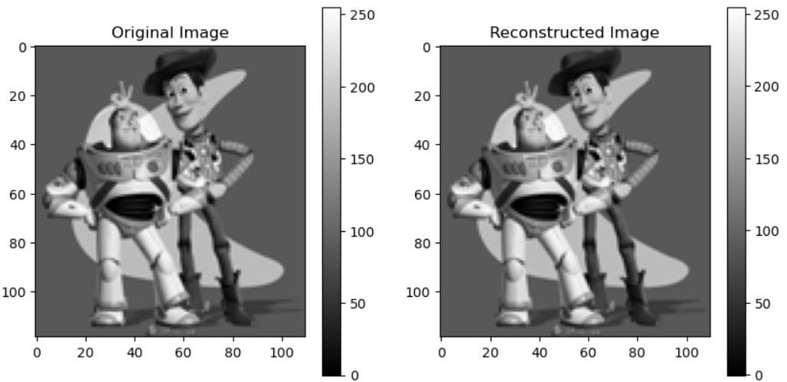

Gradient Domain Processing Example
This example demonstrates gradient domain processing, where an image is reconstructed using its gradients. The process involves:
- Computing the x and y gradients from the source image.
- Using these gradients, along with a fixed pixel intensity constraint, to solve for the output image.
- Reconstructing the image by solving a least squares optimization problem.

Introduction to Poisson Blending
Poisson blending is a specific application of gradient domain processing used for seamless image compositing. The technique solves the Poisson equation to combine parts of a source image into a target image.
It works by:
- Minimizing the difference in gradients between the source and target images within a defined region.
- Ensuring smooth transitions at the boundary by constraining the pixel values to match the target image.
The result is a blended image where the inserted region seamlessly integrates with the background, maintaining consistent lighting and texture. Poisson blending is widely used in image editing tools
for tasks like object insertion, removal, and texture replacement.